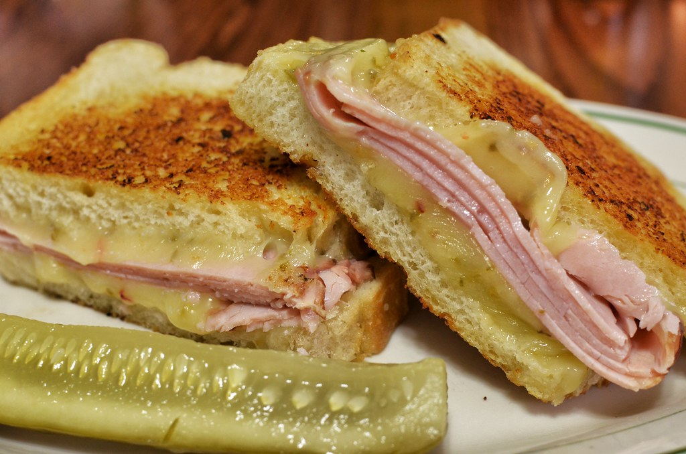

Pickle Grilled Cheese

Description
This pickle grilled cheese is filled with havarti and chopped dill pickles and pan-toasted to golden perfection. I highly recommend serving this with dill pickle kettle chips for the maximum pickle experience!
Ingredients
- 8 slices sourdough bread
- 3 tablespoons mayonnaise
- 1 1/2 cups shredded havarti cheese
- 1/2 cup chopped dill pickles
- 3 tablespoons softened butter, divided
Steps
- Place bread on a work surface and spread mayo evenly on one side of each bread slice.
- Toss cheese and pickles together in a bowl until evenly combined. divide cheese mixture evenly among 4 bread slices. Place remaining 4 bread slices, mayo side down, on top of cheese and pickle mixture.
- Spread the tops of sandwiches evenly with half of softened butter. Heat a large skillet over medium heat.
- Place sandwiches, buttered side down, in skillet. Spread remaining butter evenly over tops of sandwiches. Cook until golden brown and toasted on bottom side, about 4 minutes. Flip and cook until cheese is melted through and bread is toasted on both sides, about 4 minutes more. Serve immediately.
Home